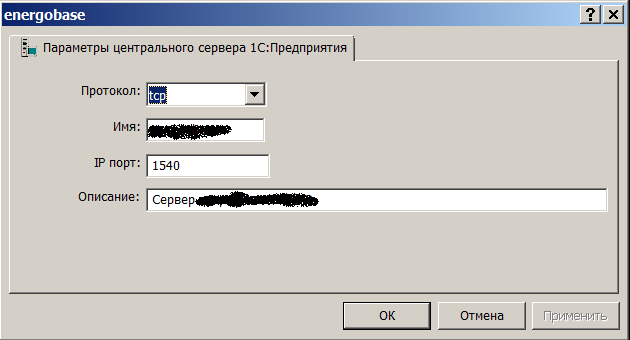
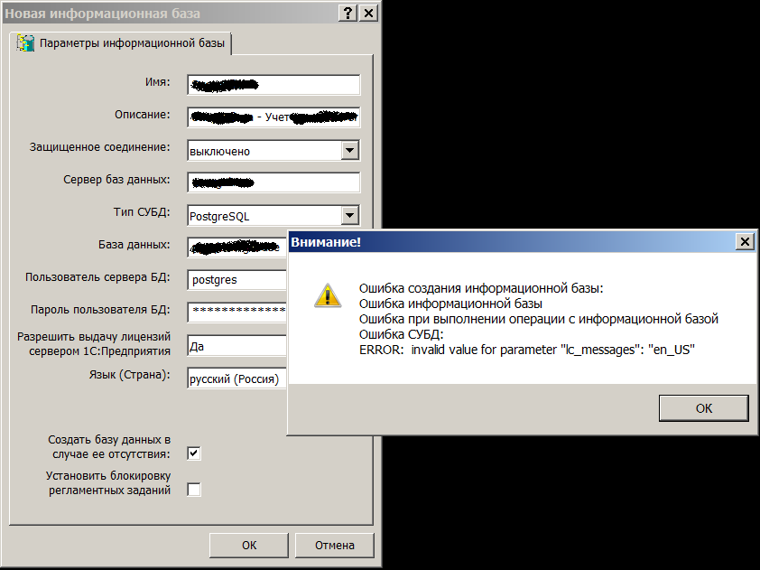
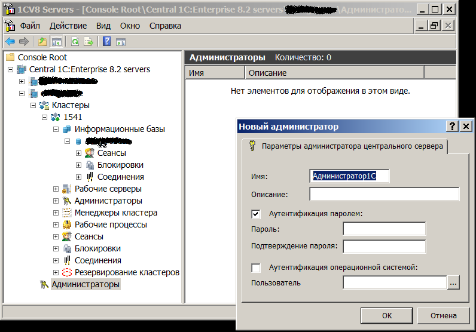

Задание пароля основного пользотеля в PosgreSQL
Для изменения пароля нужно переключиться на UNIX-пользователя postgres, только из-под него можно запускать команды работы с PostgreSQL:
# su postgres
Задается пароль основного пользователя postgres (не путать UNIX-пользователем postgres) в PostgreSQL
psql -U postgres -c "ALTER USER postgres PASSWORD 'НовыйПароль'"
Далее в файле /var/lib/pgsql/data/pg_hba.conf закомментирована строка:
# host all all 0.0.0.0/0 md5
И добавлена строка:
host all all 127.0.0.1/32 ident
Примечание позже: оказалось, что с такой строкой приконнектиться к базе нельзя. Пришлось вернуть закомментированную строку.
В файле /var/lib/pgsql/data/postgresql.conf — настройки сервера. Нужно указать параметры (раскомментировать строки или если этих параметров нет, то ввести их вручную):
default_with_oid = on # не сделано, такой опции нет. Есть default_with_oids.
track_counts = on
autovacuum = on
Далее надо перезапустить сервис:
# service postgresql restart
Настройка фаирвола iptables
Установлена программа iptables-persistent.
Изменен файл /etc/iptables/rules.v4:
# Generated by iptables-save v1.4.14 on Thu Feb 27 17:30:04 2014
*filter
:INPUT ACCEPT [0:0]
:FORWARD DROP [0:0]
:OUTPUT ACCEPT [0:0]
-A INPUT -i lo -j ACCEPT
-A FORWARD -i lo -j ACCEPT
-A INPUT -p icmp -m icmp --icmp-type any -j ACCEPT
# Блокировка облачного хранилища, для отладки подсистемы резервного копирования
# -A INPUT -s auth.selcdn.ru -j DROP
# Блокировка брутфорсеров SSH. IP берутся из /var/log/secure
-A INPUT -s 95.51.3.162 -j DROP
# Разрешение соединения по SSH с любого IP
-A INPUT -p tcp -m tcp --dport 22 -j ACCEPT
-A INPUT -p udp -m udp --dport 22 -j ACCEPT
# -----
# Тут надо разместить правила доступа с разных IP-шников
# -----
# Разрешение передачи траффика на уже открытых соединениях
-A INPUT -m state --state RELATED,ESTABLISHED -j ACCEPT
# Отклонять все пакеты, которые не подходят ни под одно описанное выше правило, со статусом "узел запрещен"
-A INPUT -j REJECT --reject-with icmp-host-prohibited
COMMIT
# Completed on Thu Feb 27 17:30:04 2014
Изменен файл /etc/iptables/rules.v6:
# Generated by ip6tables-save v1.4.14 on Thu Feb 27 17:30:04 2014
*filter
:INPUT DROP [0:0]
:FORWARD DROP [0:0]
:OUTPUT DROP [0:0]
-A INPUT -i lo -j ACCEPT
-A FORWARD -i lo -j ACCEPT
-A OUTPUT -i lo -j ACCEPT
COMMIT
# Completed on Thu Feb 27 17:30:04 2014
Для применения правил надо дать команды:
# service iptables-persistent flush
# iptables-restore < /etc/iptables/rules.v4
Настройки из файлов /etc/iptables/rules.v4 и /etc/iptables/rules.v6 применяются и при загрузке системы.
Далее в файле /etc/iptables/rules.v4 надо будет прописать правила доступа с различных IP-шиков, открыть для них порты сервера 1С.
Настройка имени хоста
В файле /etc/hostname прописано имя:
besthost
Файл /etc/hosts приведен к следующему виду:
127.0.0.1 localhost
127.0.1.1 besthost.lan besthost
# The following lines are desirable for IPv6 capable hosts
::1 localhost ip6-localhost ip6-loopback
ff02::1 ip6-allnodes
ff02::2 ip6-allrouters
Дана команда:
hostname besthost
Сделана перезагрузка.
Настройка имени хоста для сервера 1C
Далее в файле /home/usr1cv82/.1cv82/1C/1Cv82/srvribrg.lst вместо dbs1 прописано besthost:
{6d260294-48e5-11e2-2d87-0015179cc4c1,"Локальный кластер",1541,"besthost",0,0,0,0,0,0}
В файле /home/usr1cv82/.1cv82/1C/1Cv82/reg_1541/1CV8Reg.lst так же везде вместо dbs1 прописано besthost.
Сервер перезагружен.
Настройка DNS имени
На клиентской машине в файле C:\windows\system32\drivers\etc\hosts прописано:
<IP сервера> besthost
Настройка 1С сервера
Запущена консоль администрирования серверов 1С:Предприятие.
Создан новый сервер:

Создана новая база данных с именем pgsqlbase. При ее создании появилась ошибка:

Ошибка:
invalid value for parameter "lc_messages": "en_US"
Похоже, что в настройках PostgreSQL нет английской локали. А может быть, при установке системы небыло установлено системной английской локали.
Проверяем доступные локали:
# cat /etc/locale.gen | grep -v "#"
ru_RU.UTF-8 UTF-8
Действительно, английской локали нет.
Надо запустить:
dpkg-reconfigure locales
И установить галочки на локалях:
en_US.UTF-8
ru_RU.UTF-8
en_US.ISO-8859-1
После чего локали будут сгенерированы.
Перезапуск SQL-сервера:
service postgresql restart
После чего база будет успешно создана.
Создание администратора центрального сервера 1С
В консоли управления серверами для кластера besthost выбран пункт Администраторы, и заведен пользователь:

После этих действий можно начинать работать с 1С.